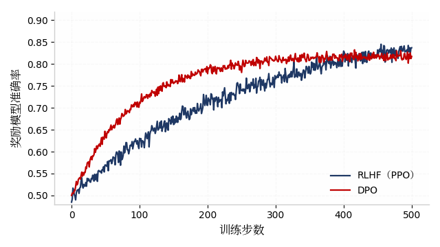

1 引言
以 GPT 系列为代表的大语言模型（Large Language Model, LLM）通过大规模语料预训练获得了 通用的语言理解与生成能力。然而，预训练目标仅仅是“预测下一个词”，模型可能生成虚假、 有害或不符合用户意图的内容。如何让模型的行为与人类的意图和价值观保持一致，即 “对齐”（Alignment）问题1，成为大语言模型研究与应用中的核心议题之一。
本文第 2 节介绍对齐技术的背景与两条主要技术路线；第 3 节从多个维度对比两类方法并给出 实验分析；第 4 节讨论现有方法的局限；第 5 节总结全文并展望未来方向。
2 对齐技术背景
2.1 对齐问题的提出
对齐问题指模型的实际行为与人类期望之间存在的系统性偏差。大语言模型在海量无标注语料上 训练，语料中不可避免包含偏见、错误与有害信息；同时，纯粹的最大似然训练目标并不区分 “像人话”与“对人有用”。因此，在预训练之后引入以人类偏好为信号的微调阶段，成为提升模型 可用性与安全性的标准做法。
2.2 基于人类反馈的强化学习（RLHF）
RLHF（Reinforcement Learning from Human Feedback）是当前最具代表性的对齐方法，其典型流程 包括三个步骤：
- 监督微调（SFT）：在高质量人工标注的指令数据上对预训练模型进行微调，得到初始策略模型；
- 奖励模型训练（RM）：收集人类对多个候选回复的偏好排序，训练奖励模型对回复质量打分；
- 强化学习优化（PPO）：以奖励模型输出为奖励信号，使用近端策略优化算法微调策略模型，并加入 KL 散度约束防止模型偏离过远。
RLHF 的优化目标可以形式化地表示为：
其中 rφ(x, y) 为奖励模型打分，β 控制与参考模型 πref 的偏离程度。
2.3 直接偏好优化（DPO）
DPO（Direct Preference Optimization）提出了一种无需显式训练奖励模型、也无需强化学习过程的 替代方案。其核心观察是：RLHF 中的最优策略与奖励函数之间存在闭式对应关系，因此可以直接 在偏好数据上以分类目标优化策略模型。DPO 将复杂的 RL 流程简化为一个稳定的监督式学习目标， 显著降低了训练复杂度与调参难度。
3 方法对比与实验分析
3.1 对比维度
表 1 从优化范式、训练流程、计算开销与稳定性四个维度对比 RLHF 与 DPO。
| 对比维度 | RLHF | DPO |
|---|---|---|
| 优化范式 | 强化学习（PPO） | 监督式分类目标 |
| 奖励模型 | 需要单独训练 | 隐式表达，无需训练 |
| 训练流程 | SFT → RM → PPO，三阶段 | SFT → DPO，两阶段 |
| 显存占用 | 需同时加载 4 个模型，较高 | 需加载 2 个模型，较低 |
| 训练稳定性 | 对超参数敏感，易发散 | 较稳定，调参成本低 |
| 能力上限 | 在线采样，探索能力更强 | 受限于离线偏好数据分布 |
3.2 训练动态示意
图 1 给出了两种方法在偏好数据上训练时的奖励准确率变化示意（数据为演示用模拟数据）。 可以看到，DPO 在训练早期收敛更快，而 RLHF 由于引入在线采样，在后期具有更高的上限。

4 讨论
尽管 DPO 在工程上更为简洁，但近期研究表明其性能受离线偏好数据分布的限制，在分布外数据上 可能出现退化；而 RLHF 的在线探索机制在数学推理等复杂任务上仍具优势。实践中，越来越多工作 采用“DPO 冷启动 + 在线 RL 精调”的混合方案，兼顾稳定性与能力上限。此外，奖励黑客 （Reward Hacking）、偏好数据标注成本与标注者偏见，仍是所有偏好学习方法共同面临的问题。
5 结论
本文梳理了大语言模型对齐技术中 RLHF 与 DPO 两条主要路线。RLHF 通过奖励模型与强化学习 实现高质量对齐，但流程复杂、训练不稳定；DPO 以监督式目标直接优化偏好，工程简洁、训练稳定， 已成为轻量级对齐的主流选择。未来，在线偏好学习、过程奖励模型与可扩展监督（Scalable Oversight）可能成为对齐技术进一步发展的重要方向。
补充材料
附录内容可根据需要添加，如代码清单、原始数据、调查问卷等。附录章节由 CSS counter 自动编号（附录 A、附录 B……）。
参考文献
- OUYANG L, WU J, JIANG X, et al. Training language models to follow instructions with human feedback[J]. Advances in Neural Information Processing Systems, 2022, 35: 27730-27744.
- RAFAILOV R, SHARMA A, MITCHELL E, et al. Direct preference optimization: Your language model is secretly a reward model[J]. Advances in Neural Information Processing Systems, 2023, 36: 53728-53741.
- CHRISTIANO P F, LEIKE J, BROWN T, et al. Deep reinforcement learning from human preferences[J]. Advances in Neural Information Processing Systems, 2017, 30: 4299-4307.
- STIENNON N, OUYANG L, WU J, et al. Learning to summarize from human feedback[J]. Advances in Neural Information Processing Systems, 2020, 33: 3008-3021.
- KAUFMANN T, WENG P, BENGS V, et al. A survey of reinforcement learning from human feedback[EB/OL]. (2023-12-12)[2026-05-01]. https://arxiv.org/abs/2312.14925.
- 周志华. 机器学习[M]. 北京: 清华大学出版社, 2016.
- ↩ 对齐（Alignment）又称值对齐（Value Alignment），指使 AI 系统的行为与人类意图和价值观保持一致。参见 Russell (2019) Human Compatible。